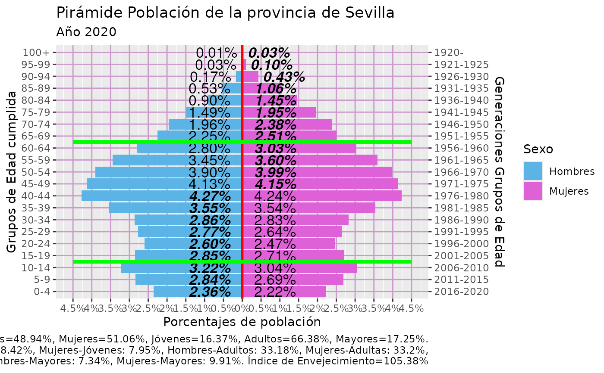

DemBas_piramidePorc_Generaciones
Usage
DemBas_piramidePorc_Generaciones(
pop3,
Ano_ref = 2020,
Gtitulo = "Pirámide Población de la provincia de Sevilla",
Gsubtitulo = "Año 2020",
Gtitulo.X = "Porcentajes",
GHombresEtiq = "Hombres",
GMujeresEtiq = "Mujeres",
Gedadfinal = 100,
Gext_izq = -4.5,
Gext_der = 4.5,
Glimite = 0.5,
Gsizeletra = 2.5,
GpresentaResumen = TRUE,
GSegmentos = TRUE,
GHombresColor = "#5BB4E5",
GMujeresColor = "#DE61D8",
GSegmentosColor = "#00ff00"
)Examples
load(file = system.file("examples/pop3.RData", package = "DemographyBasic"))
g_pir3gen = DemBas_piramidePorc_Generaciones(pop3)
#> Warning: `guide_axis_manual()` was deprecated in ggh4x 0.3.0.
#> ℹ Please use `legendry::guide_axis_base()` instead.
#> ℹ The deprecated feature was likely used in the DemographyBasic package.
#> Please report the issue at
#> <https://github.com/calote/DemographyBasic/issues>.
g_pir3gen

ggsave("piramide.png", g_pir3gen, width = 12, height = 10)
png("piramide2.png", width = 1200)
print(g_pir3gen)
dev.off()
#> pdf
#> 2